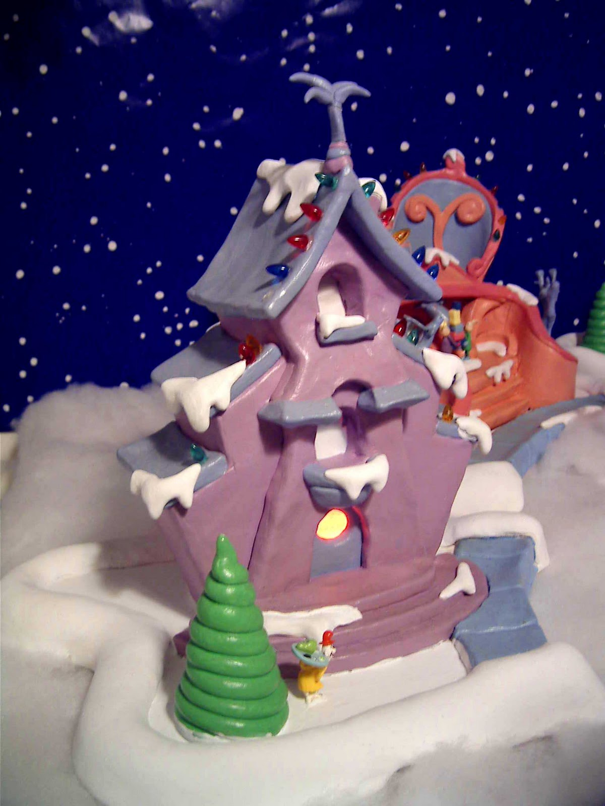

Second Place
The Second Place winner of the First Annual Who-ville Christmas House Decorating Contest was Mr. Jan McPann the man who eats green eggs and ham straight from the can and on the lid of his favorite pan.
His house was covered in snow from head to toe because the sun never shows, and the temperature likes to stay well below.
Home Previous Next Winners